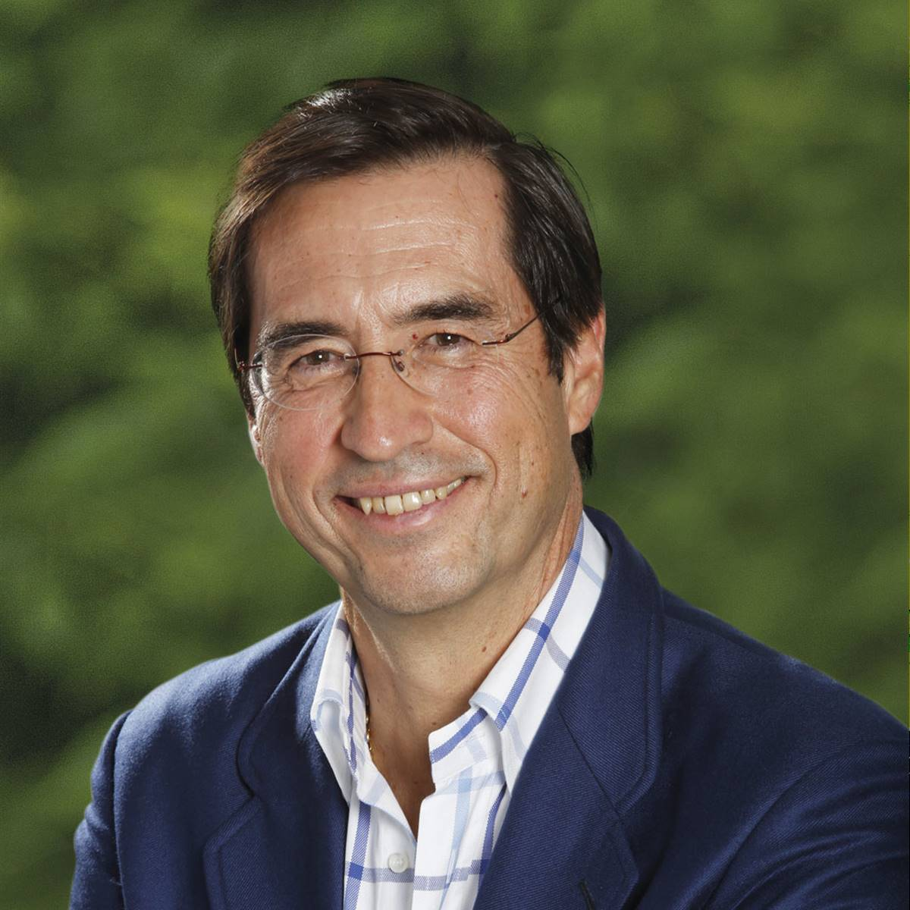

Escuela de Música en Bután y campamento de verano
Seguimos avanzando con la escuela de música en Bután a través del proyecto Music4All (B+NESDG cofunded by EU) para niños desfavorecidos: ya hemos alquilado un edificio,adquirido significantes instrumentos musicales y ya tenemos instructores locales formados a través de la Fundación Acción por la Música en España y un director butanés encargado de coordinarlo. Esto ha cambiado literalmente la vida de más de treinta niños y sus familias, con unos medios muy limitados, y les ha dado motivación para el futuro, ilusión para vivir y mayor felicidad
El año pasado hicimos el segundo campamento de verano y fue más exitoso todavía que el primero. Os mando un link https://youtu.be/bSKkdrCPWWk para que podáis ver el impacto que para nosotros es algo habitual pero para ellos muy especial.
El GNH en las Universidades y el Dr. Mario Alonso Puig.
También quiero mencionar expresamente a nuestro socio fundador y querido amigo, el Dr Mario Alonso Puig , que a través tanto de sus conferencias como de sus libros alude con frecuencia a Bután y le otorga a su filosofía de GNH una importancia relevante como influencia en su formación y en su manera de pensar.
El tema de GNH es estudiado ya en varias de las más prestigiosas universidades del mundo y el rey de Bután, muy recientemente, reveló los planes de su sueño para la construcción de una “Ciudad de Mindfulness” en el sur de Bután.
Finalmente,los que visteis la película butanesa en el cine Verdi hace un año, “Lunana :un yak en clase” , estaréis encantados de saber que estamos planificando proyectar otra muy exitosa, “El monje y la pistola”. Os mantendremos informados.
Se acerca el Día de la Felicidad internacional, el 20 de marzo , impulsado por Bután en las Naciones Unidas, y aprovecho para desearos todo lo mejor y para pediros que sigáis colaborando con nuestra Asociación para seguir avanzando en nuestros proyectos, cada aportación es bienvenida y cada céntimo va directamente a Bután.
Asociarse al Centro GNH Spain
